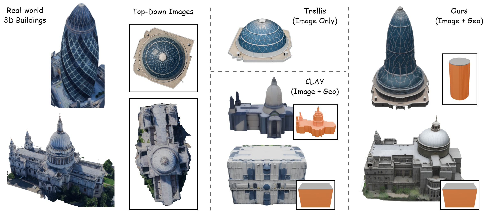
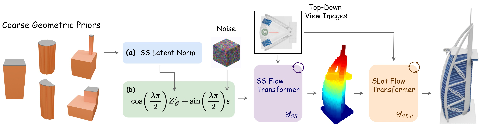
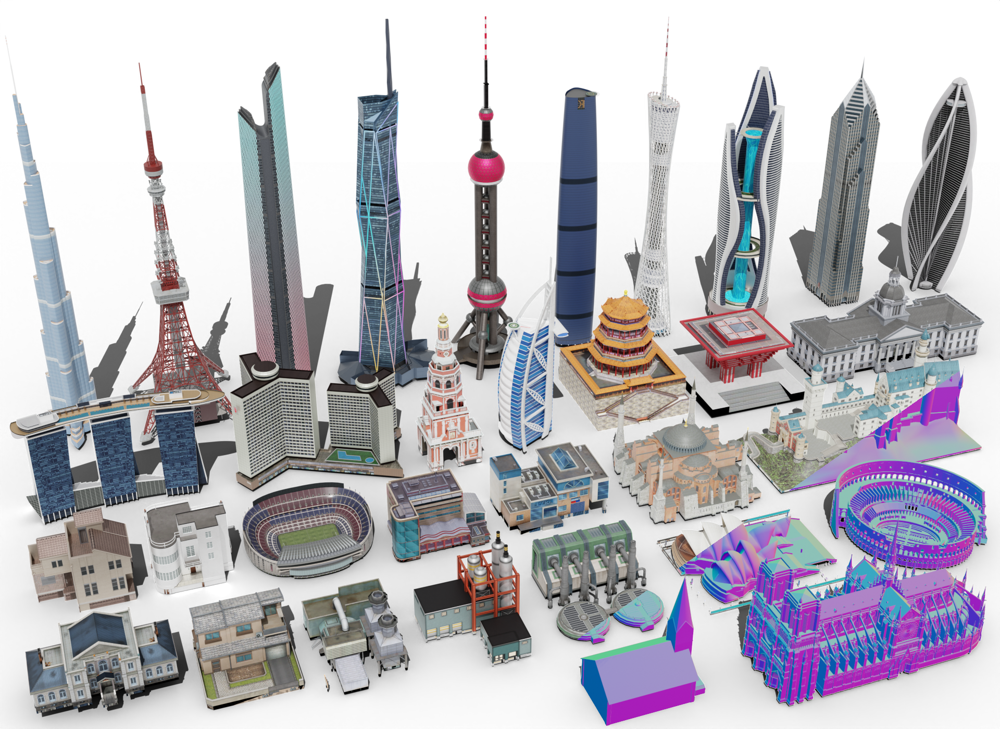
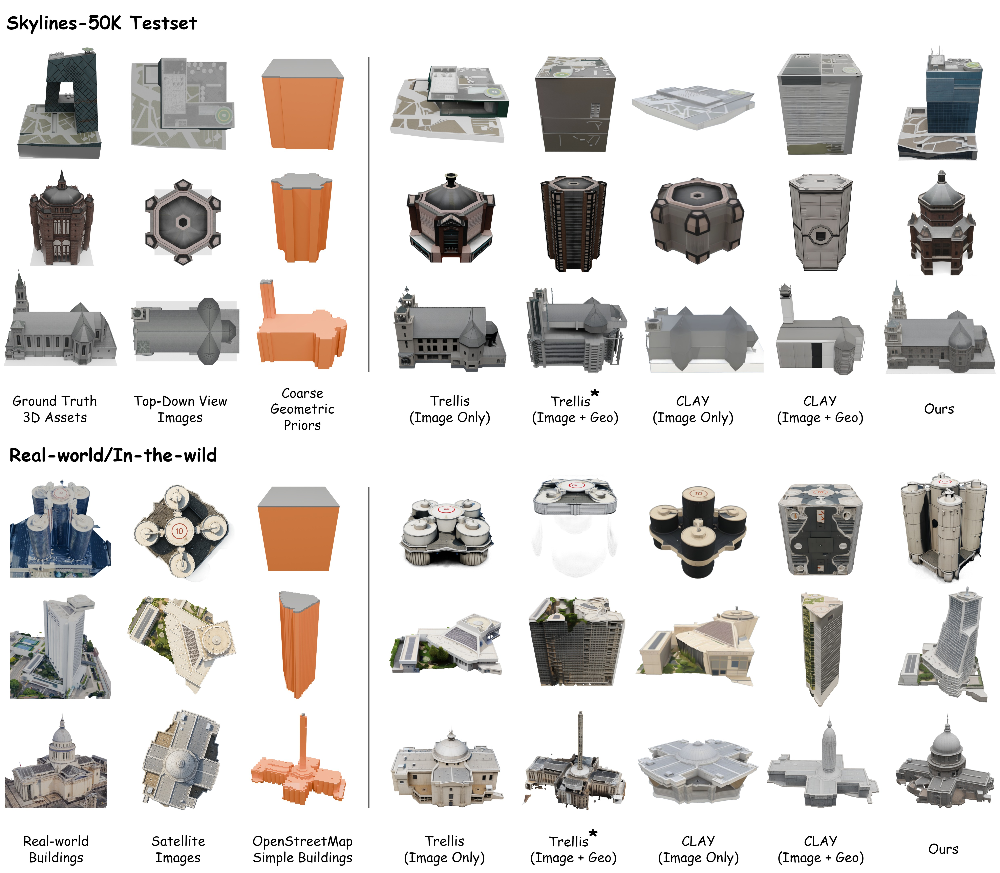
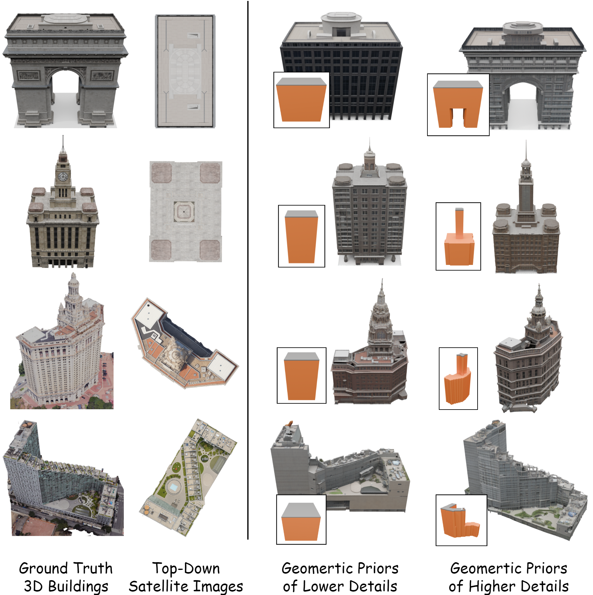
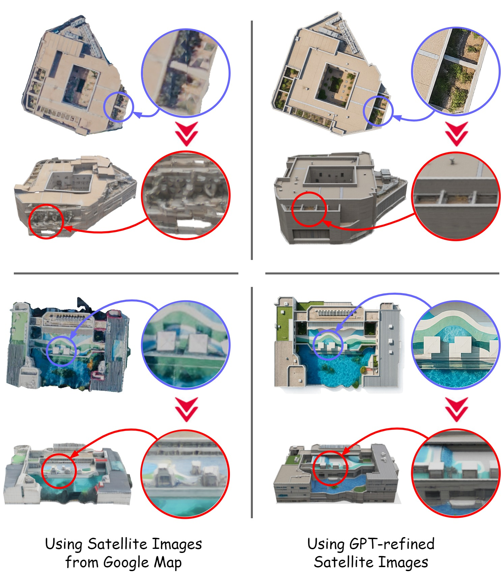
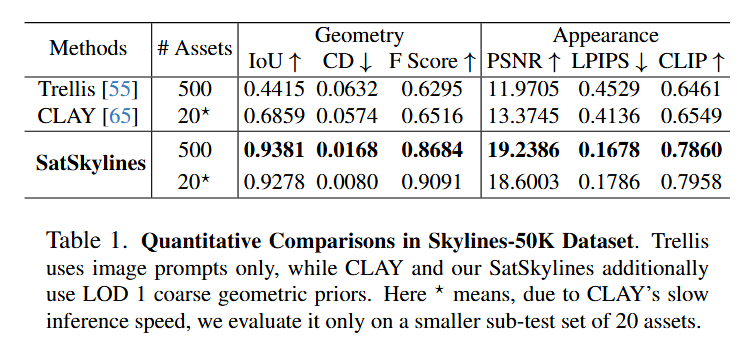
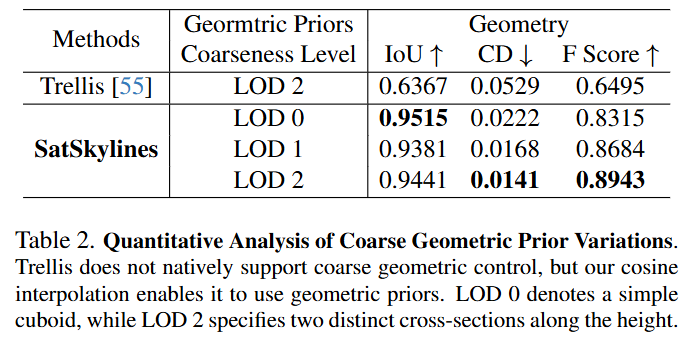

We present SatSkylines, a 3D building generation approach that takes satellite imagery and coarse geometric priors.
Without proper geometric guidance, existing image-based 3D generation methods struggle to recover accurate building structures from the top-down views of satellite images alone. On the other hand, 3D detailization methods tend to rely heavily on highly detailed voxel inputs and fail to produce satisfying results from simple priors such as cuboids. To address these issues, our key idea is to model the transformation from interpolated noisy coarse priors to detailed geometries, enabling flexible geometric control without additional computational cost.
We have further developed Skylines-50K, a large-scale dataset of over 50,000 unique and stylized 3D building assets in order to support the generations of detailed building models. Extensive evaluations indicate the effectiveness of our model and strong generalization ability.

Trellis fails to recover building heights (upper-middle). CLAY requires highly detailed voxels to work well (lower-middle). Our method takes top-down images and coarse geometric priors to generate realistic 3D buildings (right).

The coarse geometric prior \( \mathcal{O} \) is encoded by the SS VAE to obtain \( Z_{\mathcal{O}} \). (a) A channel-wise latent normalization is applied to produce \( Z_{\mathcal{O}}^{'} \). (b) The cosine geometric interpolation is then performed between \( Z_{\mathcal{O}}^{'} \) and gaussian noise \( \epsilon \), with \( \lambda \) controlling geometric guidance strength. Finally, the SS and SLat flow transformers generate detailed geometry and appearance.

Skylines-50K is a large-scale, diverse, high quality 3D building dataset. These assets are sourced from the Steam Workshop of the famous city-building and simulation game 'Cities: Skylines'. Examples of rendered buildings are shown here to demonstrate style diversity.

Visual comparisons of generated 3D building assets between our method and previous approaches. The first three rows are from the Skylines-50K test set, and the last three rows are real-world examples. Here \( \star \) indicates that Trellis does not natively support coarse geometric control, but our cosine geometric interpolation can be applied to incorporate geometric priors into its input.
The first two rows are examples from Skylines-50K dataset, while the last two rows are real-world cases.

Blue circles highlight zoomed-in details from 2D satellite images, while red circles mark the corresponding regions in SatSkylines generated 3D buildings. All examples are randomly sampled from real-world data.



@article{jin2025sat,
title={SAT-SKYLINES: 3D Building Generation from Satellite Imagery and Coarse Geometric Priors},
author={Jin, Zhangyu and Feng, Andrew},
journal={arXiv preprint arXiv:2508.18531},
year={2025}
}The authors would like to thank our primary sponsors of this research: Mr. Clayton Burford of the Battlespace Content Creation (BCC) team at Simulation and Training Technology Center (STTC). This work is supported by University Affiliated Research Center (UARC) award W911NF-14-D-0005. Statements and opinions expressed and content included do not necessarily reflect the position or the policy of the Government, and no official endorsement should be inferred.